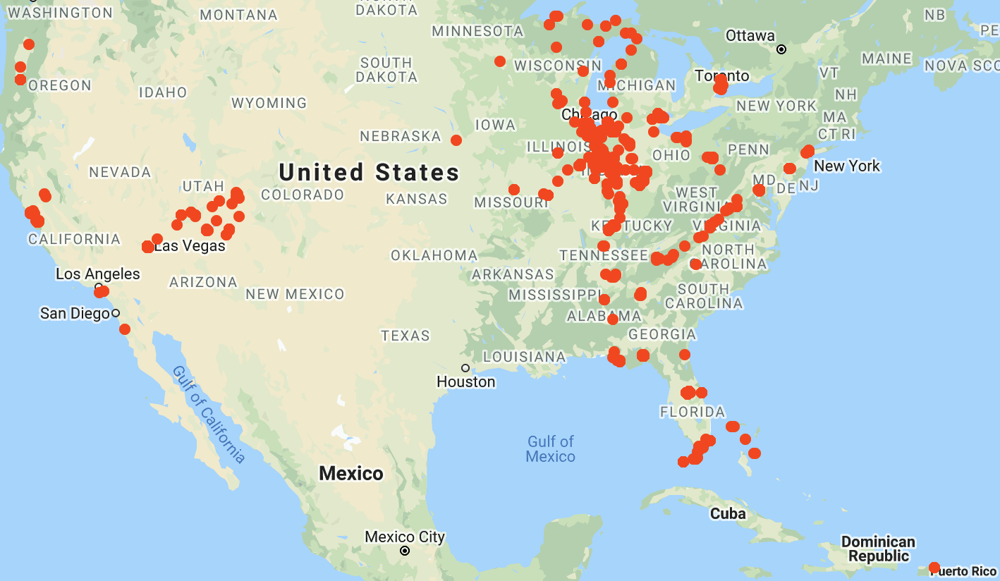

Academic
My email is “myfirstname dot mylastname at gmail dot com”, and my resume can be found here (Last updated: 01/16/2021).
I am a PhD student in Purdue University Computer Science department under the supervision of Prof. Suresh Jagannathan.
My current research interest is in applying formal verification techniques to the safety reasoning of neural network models in various applications.
I have also looked at plenty of other problems in the past, including but not limited to Relaxed Memory Models, Concurrency Logics and Liveness properties, Verified Compilation, etc.. I am broadly interested in them.
Before joining Purdue, I got my Bachelor’s degree at Tongji University (同济大学). While an undergrad, I was once an exchange student at Rose-Hulman Institute of Technology (RHIT) in Fall 2012, and once an intern at Intel, Shanghai in Spring 2013.
Personal
Married to Bing Yuan. ❤️
We have a super-adorable dog GunGun! (c.f. the logo of this blog)
More introvert, actually INTJ-T – (THAT’S WHY I WROTE A BLOG AND LET YOU READ IT YOURSELF.).
Enthusiastic soccer fan! badminton player, (seasonal) runner, (occasional) swimmer.
Name
My first name is pronounced as ʃ-u-an-k-ang where X is like sh. I know it is not always easy to pronounce, so feel free to call me Lin as well.
Footprints
I was born in Longyan (龙岩), my beloved “small” hometown in Fujian (福建) province, southeast China.
As an undergrad, I live in Shanghai for 4 years. During that period, I also visited Singapore once (for traveling). In fall 2012, I was an exchange student at Rose-Hulman and came to Indiana. One year later, I returned to Indiana, this time staying at Purdue for the next 6+ years..
Below is my footprints within US (updated 06/02/2019), I love sightseeing and I still have so so so many places to explore!
